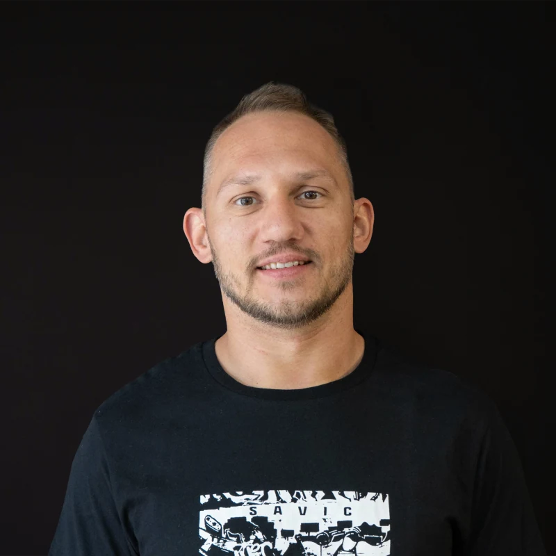
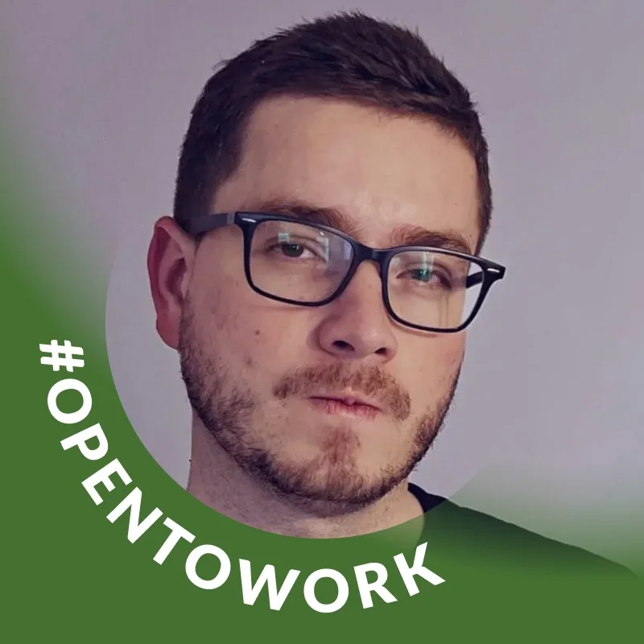

Проектирую продукт в автофинансировании: провожу исследования, собираю инсайты, развиваю интерфейсы приложения и помогаю выстраивать дизайн-процесс внутри команды.
Пересобрала пользовательский опыт сервиса: провела UX-аудит, структурировала требования, спроектировала новые сценарии и собрала базовый UI-kit для разработки.
Работала над сложными EdTech-интерфейсами, мобильным приложением и дизайн-системой. Улучшала пользовательские сценарии, UI-kit, коммуникацию с разработкой и маркетинговые материалы.
Проверяла домашние задания, записывала видеоразборы и помогала студентам доводить учебные проекты до уровня, с которым можно было выходить на рынок.
Проектировала iOS-приложение для учета расходов: собирала пользовательские сценарии, прототипы, экраны и поддерживала компоненты для передачи в разработку.
Делала лендинги, визуальные концепции, учебные материалы и контент для соцсетей. Параллельно была ментором на курсе по визуалу в соцсетях.
Разобралась в роли старших дизайнеров и поняла, как расти до лида: брать больше ответственности, улучшать процессы и качество дизайн-решений, развивать сильную дизайн-среду и помогать расти другим специалистам.
Разобралась с ролью метрик в продуктовой работе: воронки, KPI, метрики продукта и фич, проверка гипотез и обоснование дизайн-решений цифрами.
Практика в CJM, качественных и количественных исследованиях, работе с метриками и разборе реальных продуктовых процессов.
Интенсив про Key Action Timeline, коридор ограничений, конкуренцию гипотез и практические задачи от CreativePeople, Humbleteam, OZON, Raiffeisen Bank и Яндекс.Плюс.
Прокачивала Figma, защиту проектов, консистентность, анимации на Tilda, дизайн-системы, продуктовый процесс, прототипирование и UX-исследования.
Изучала продвинутую работу в Figma, компоненты, auto layout, UI-киты, адаптивный дизайн, CJM, mind map, user flow и подготовку макетов к передаче в разработку.
Мы с Анастасией довольно долго работали в одной команде: я отвечала за разработку, а она — за дизайн. С ней было легко взаимодействовать: Анастасия всегда была открыта к обсуждению, помогала двигать работу вперёд и не затягивать процесс.
Её дизайн-решения были аккуратными, продуманными и всегда делали продукт удобнее для конечного пользователя. Анастасия — надёжный коллега и хороший командный игрок, который делает совместную работу более слаженной. Я с удовольствием поработала бы с ней снова.
Перевод рекомендации на LinkedIn

Анастасия присоединилась к Schooly в тот момент, когда дизайн-команда уже не справлялась с объёмом задач. Ещё на первом собеседовании было заметно, насколько сильно она увлечена дизайном, и нам повезло, что она стала частью команды.
С первых дней её широкий опыт помог разгрузить команду. Несмотря на то что Анастасия пришла в продукт из незнакомой для неё отрасли, она быстро погрузилась в контекст, легко адаптировалась и внимательно относилась к обратной связи.
Сильное дизайнерское мышление, любознательность и умение находить суть проблемы помогли ей быстро вырасти как специалисту. У нас было много проектов, которые нужно было создавать с нуля, и Анастасия никогда не боялась работать с неопределённостью и браться за новые сложные задачи.
Анастасия принесёт большую ценность команде, которая хочет создавать заметные и сильные продукты.
Перевод рекомендации на LinkedIn

Я работал с Анастасией как над проектом Schooly, так и над своим личным проектом — и в обоих случаях она отлично справилась с задачами. Анастасия быстро превращала идеи в понятные и продуманные интерфейсы, а также предлагала ценные решения, которые улучшали пользовательский опыт продукта.
С ней легко работать: она открыта к обратной связи, умеет взаимодействовать с командой и ориентирована на практический результат. Я определённо рекомендую Анастасию как надёжного продуктового дизайнера.
Перевод рекомендации на LinkedIn